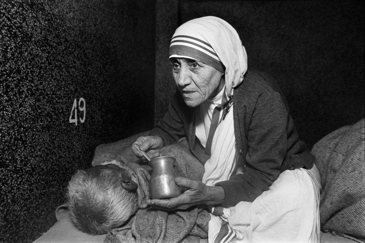

St. Mother Teresa of Calcuta
Not all of us can do great things. But we can do small things with great love.

A woman from a poor country who struggled with doubt and worked for the poor: a very 20th century saint CREDIT: REX FEATURES
Time line of Mother Teresa
- Mother Teresa was born in 1910 in Skopje, the capital of the Republic of Macedonia.
- At the age of 18, she was given permission to join a group of nuns in Ireland.
- After a few months of training, with the Sisters of Loreto, she was then given permission to travel to India.
- She took her formal religious vows in 1931 and chose to be named after St Therese of Lisieux – the patron saint of missionaries.
- On her arrival in India, she began by working as a teacher; however, the widespread poverty of Calcutta made a deep impression on her, and this led to her starting a new order called “The Missionaries of Charity
- Mother Teresa felt that serving others was a fundamental principle of the teachings of Jesus Christ.
- She experienced two particularly traumatic periods in Calcutta. The first was the Bengal famine of 1943 and the second was the Hindu/Muslim violence in 1946, befor the partition of India. In 1948, she left the convent to live full-time among the poorest of Calcutta.
- In 1952, she opened her first home for the dying, which allowed people to die with dignity.
- Her work spread around the world. By 2013, there were 700 missions operating in over 130 countries.
- The Missionaries of Charity now has branches throughout the world including branches in the developed world where they work with the homeless and people affected by AIDS. In 1965, the organisation became an International Religious Family by a decree of Pope Paul VI.
-
In the 1960s, the life of Mother Teresa was brought to a wider public attention by Malcolm Muggeridge
who wrote a book and produced a documentary called
Something Beautiful for God
. -
In 1979, she was awarded the Nobel Peace Prize
for work undertaken in the struggle to overcome poverty and distress, which also constitutes a threat to peace.
- She didn’t attend the ceremonial banquet but asked that the $192,000 fund be given to the poor.
- after a years-long period of ill health, Mother Teresa died at age 87 on Tuesday Sept. 5, 1997
- Mother Teresa was canonized as a saint on Sept. 4, 2016
We know only too well that what we are doing is nothing more than a drop in the ocean. But if the drop were not there, the ocean would be missing something.
—Mother Teresa
If you have time, you should read more about this incredible human being on her Wikipedia entry.